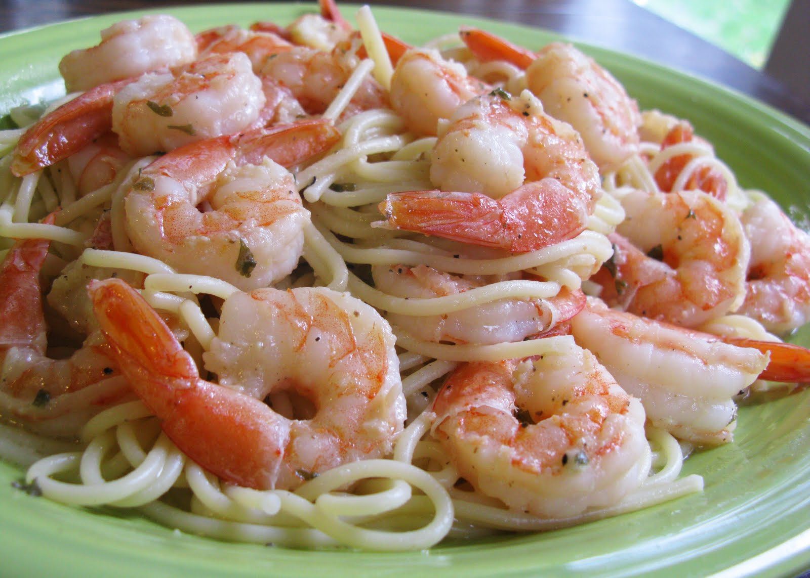

❶ Bring a large pot of lightly salted water to a boil (1 tablespoon for 4 quarts of water). Cook 1 pound linguine according to the package directions until al dente. Drain and set aside. ❷ While the pasta cooks, heat a large skillet over medium-high heat. Add 4 tablespoons salted butter and 2 tablespoons olive oil. Once the butter has melted, add 1 tablespoon minced garlic and cook for about 30 seconds, or until fragrant. ❸ Add 1 pound raw shrimp to the skillet, season with 1 teaspoon salt and ½ teaspoon crushed red pepper flakes. Stir continuously and cook until the shrimp just turns pink, about 2 minutes. ❹ Pour in ½ cup white wine to deglaze the skillet, scraping up any browned bits from the bottom of the pan. Stir in ¼ cup lemon juice and 1 teaspoon Italian seasoning. Allow the mixture to simmer for 3 to 5 minutes, letting the flavors combine. ❺ Add the cooked pasta to the skillet and toss to coat with the sauce. Remove from heat sprinkle with 2 tablespoons grated Parmesan cheese and garnish with 2 tablespoons chopped fresh parsley. Serve immediately.
Serving: 1 serving | Calories: 741kcal | Carbohydrates: 88g | Protein: 39g | Fat: 22g | Saturated Fat: 9g | Trans Fat: 1g | Cholesterol: 318mg | Sodium: 1615mg | Potassium: 418mg | Fiber: 4g | Sugar: 4g | Vitamin A: 624IU | Vitamin C: 14mg | Calcium: 239mg | Iron: 4mg
Recipe from The Stay at Home Chef